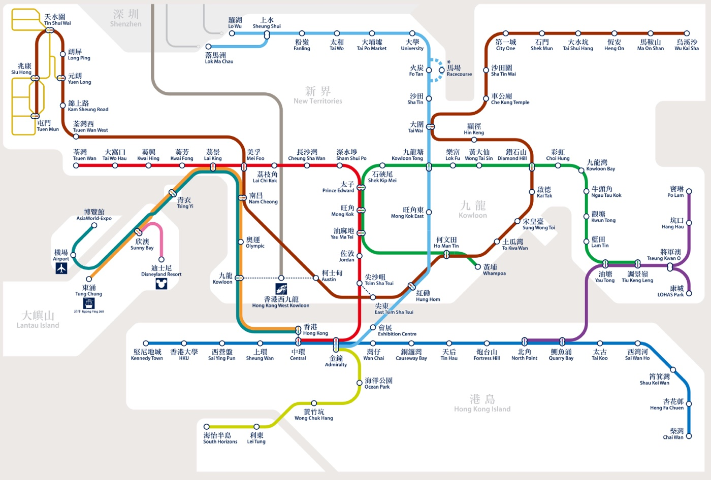

MTR (Mass Transit Railway): Your Best Friend
The Hong Kong metro system is efficient, clean and super convenient. It avoids traffic entirely, and even rush hour is acceptable.
How to ride the MTR like a local
- Follow the signs and staff. Pay attention to the platform signs, because the staff help run the system smoothly.
- Choose your car. Digital boards on the platform show how crowded each car is. They also point out the ideal interchange stations, so you can walk to the other side of the platform to change lines without crossing the whole station.
- Travel late. Trains run frequently from early morning until past midnight, and they connect New Territories campuses straight to the nightlife districts on Hong Kong Island in under an hour.
- Use the right exit. Big stations have many exits, so check the best one for your destination in the MTR app before you leave the platform.
- Follow the rules. Don't eat or drink in the paid area, and stand to one side on escalators so others can pass.
Pay with your Octopus card. For the route from Kowloon Tong station to your classroom, see From Kowloon Tong MTR to CityU.
